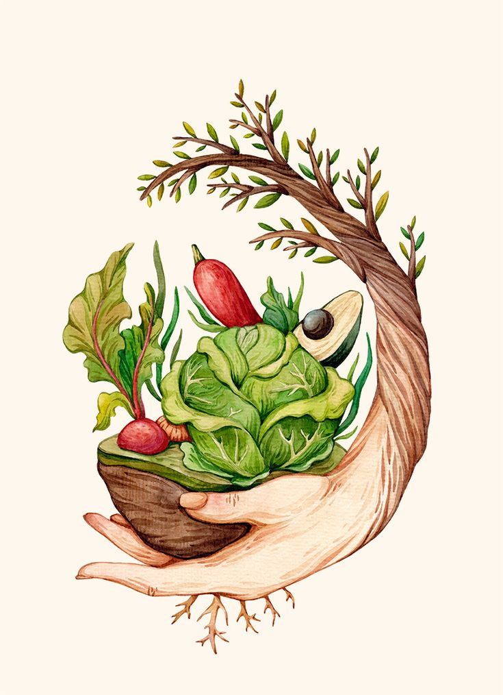

Calories
Calories are an indicator of the energy content in the food. Once you intake the food, the calories are consumed when you walk, think, or breathe. On average, a person may require about 2000 calories a day to maintain their body weight. Generally, a person's calories may depend on their gender, age, and physical activity. Moreover, men need more calories than women. Again, people who are more into exercising require more calories in comparison to people who don't. It's also important to remember that the source of calories is equally important as the amount. Stuffing your food with empty calories, i.e. those that don't contain any nutritional value doesn't help in any way. Empty calories can be found in foods such as:
- Sugar
- Butter
- Cookies
- Cakes
- Energy drinks
- Ice cream
- Pizza
Importance of a Balanced Diet
Eating a healthy diet is all about feeling great, having more energy, improving your health, and boosting your mood. Good nutrition, physical activity, and healthy body weight are essential parts of a person's overall health and well-being.
There's no questioning the importance of healthy food in your life. Unless you maintain a proper diet for a healthy body, you may be prone to diseases, infection, or even exhaustion. The importance of nutritious food for children especially needs to be highlighted since otherwise they may end up being prone to several growth and developmental problems. Some of the most common health problems that arise from lack of a balanced diet are heart disease, cancer, stroke, and diabetes.
Being physically active manages many health problems and improves mental health by reducing stress, depression, and pain. Regular exercise helps to prevent metabolic syndrome, stroke, high blood pressure, arthritis, and anxiety.
What falls under a balanced diet?
A balanced diet includes some specific healthy food groups under it:
- Vegetables such as leafy greens, starchy vegetables, legumes like beans and peas, red and orange vegetables, and others like eggplant
- Fruits that include whole fruits, fresh or frozen fruits but not canned ones dipped in syrup
- Grains such as whole grains and refined grains. For example, quinoa, oats, brown rice, barley, and buckwheat
- Protein such as lean beef and pork, chicken, fish, beans, peas, and legumes
- Dairy products such as low-fat milk, yogurt, cottage cheese, and soy milk

The vegan diet
A vegan diet is based on plants (such as vegetables, grains, nuts and fruits) and foods made from plants.
Vegans do not eat foods that come from animals, including dairy products and eggs.
Healthy eating as a vegan,
you can get the nutrients you need from eating a varied and balanced vegan diet including fortified foods and supplements.
For a healthy vegan diet:
- eat at least 5 portions of a variety of fruit and vegetables every day
- base meals on potatoes, bread, rice, pasta or other starchy carbohydrates (choose wholegrain where possible)
- have some fortified dairy alternatives, such as soya drinks and yoghurts (choose lower-fat and lower-sugar options)
- eat some beans, pulses and other proteins
- eat nuts and seeds rich in omega-3 fatty acids (such as walnuts) every day
- choose unsaturated oils and spreads, and eat in small amounts
- have fortified foods or supplements containing nutrients that are more difficult to get through a vegan diet, including vitamin D, vitamin B12, iodine, selenium, calcium and iron
- drink plenty of fluids (the government recommends 6 to 8 cups or glasses a day)